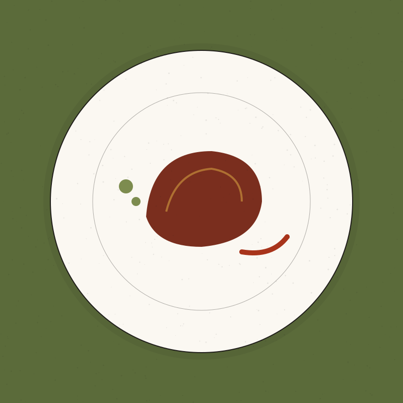

Imágenes
Galería
Platos, sala y paisaje. Mientras el restaurante no tenga fotografías propias, esta galería usa ilustraciones originales creadas para el proyecto; su autoría está registrada al final de la página.
Imágenes del restaurante
-

El comedor, con veintiocho cubiertos. -

Merluza de anzuelo en salsa verde. -

Alubia roja, berza y piparras. -

Pichón asado al txakoli. -

Pantxineta tibia. -

El paisaje que inspira la cocina. -

Huerta de temporada. -

Txakoli, servido desde cierta altura.
Atribución
Créditos de las imágenes
Registro de autoría, fuente y condiciones de uso de cada imagen del sitio. El mismo registro está en assets/images/CREDITOS.md.
| Archivo | Autoría | Fuente | Condiciones |
|---|---|---|---|
Todas las ilustraciones de assets/images/ (13 archivos SVG) |
Creadas para este proyecto de demostración | Generadas en el propio repositorio; no proceden de bancos de imágenes | Uso libre dentro del proyecto. Si se sustituyen por fotografías, cada una debe registrarse aquí con autor, URL y licencia. |